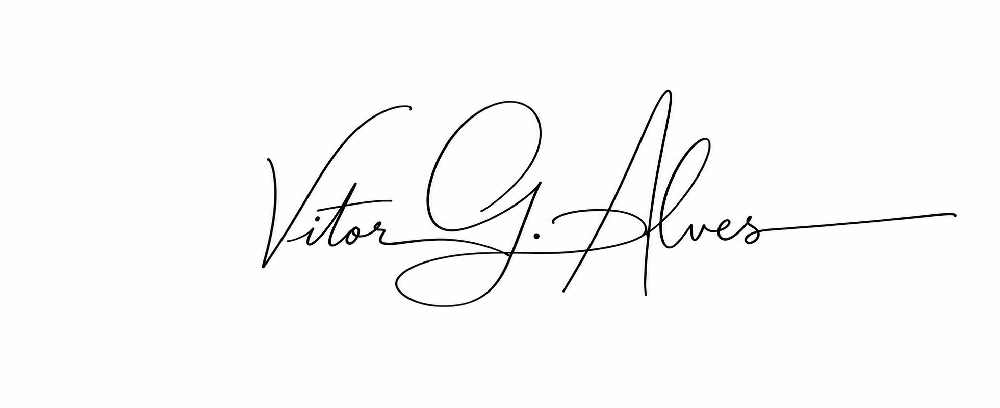

Complexidade.
Estrutura.
Clareza.
Sou Vitor G. Alves. Construo aplicações que transformam dados complexos em experiências claras — do backend à interface.
Sistemas, por dentro.
01 — EXPLORE MINHA ATUAÇÃOQuatro perspectivas sobre o meu trabalho.
Selecione uma para explorar.
Diagramas ilustrativos das áreas de atuação. Não são capturas de sistemas internos.
Da ideia.
Ao ar.
Produtos em que participei diretamente, da ideação à implementação, passando por infraestrutura, deploy, DevOps e CI/CD.
Código com
visão de conjunto.

Sou desenvolvedor fullstack em Natal, RN, com experiência profissional desde 2021. Na Geowellex, trabalho com aplicações para análise geológica e liderança técnica de frontend.
Minha atuação conecta decisões de arquitetura, desenvolvimento web e desktop e colaboração com outros desenvolvedores. Sou formado em Ciência e Tecnologia pela UFRN e curso Engenharia da Computação.